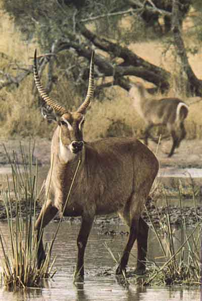

ANTILOPE D'ACQUA
|
 |
Ambiente/Habitat | Paludi ed Acquitrini |
| Frequenza | Uncommon | |
| Organizzazione | Piccoli Gruppi | |
| Periodo di Attività | Qualsiasi | |
| Dieta | Erbivoro | |
| Intelligenza | Animal Intelligence (1) | |
| Punti Combattimento | Nessuno | |
| Tesoro | Nessuno | |
| Allineamento Dominante | Neutrale | |
| Numero di Apparizione | 2d3 | |
| Classe Armatura | 6 [10 base, 2 corazza, 2 destrezza] | |
| Movimento | 12 esagoni /Nuotare 6 esagoni | |
| Dadi Vita | 2 (+4 punti ferita) | |
| Thac0 | 19 | |
| Numero di Attacchi | Corna | |
| Danni | 1d6+1 (Punta) | |
| Poteri Offensivi | Carica Migliorata; | |
| Poteri Difensivi | Robustezza Superiore (+4 Punti Ferita); | |
| Poteri Generici | Nessuno; | |
| Vulnerabilità | Nessuna; | |
| Resistenza alla Magia | Nessuna; | |
| Sensi | Vista Comune; Sensi Superiori; | |
| Dimensioni | Medium (2 m. lunghezza) | |
| Morale | Unsteady (7) | |
| Valore in Punti Esperienza | 64 |
| MODIFICATORI AI TIRI SALVEZZA | |||||||||||||||||||||||
| COR | 0 | 52 | ENV | 0 | 58 | MAG | 0 | 65 | MAL | 0 | 51 | MEN | 0 | 63 | RIF | +5 | 52 | ROB | 0 | 56 | VEL | 0 | 53 |
Descrizione
Quest’erbivoro, può raggiungere una lunghezza testa-corpo di 220 cm, un’altezza alla spalla di 120 cm, un peso di 150-250 kg.
Combat
Come suggerisce il suo stesso nome, questo animale è un ottimo nuotatore ed in caso di pericolo, se inseguito da creature terrestri, non esita a correre in acqua per fuggire. Se messo alle strette prova a colpire il suo nemico con le corna eventualmente caricando dalla distanza.
CARICA MIGLIORATA (Least Special Ability): Il corpo di questa creatura, particolarmente adatto alla corsa, rende più facile alla stessa di caricare. Per tale motivo la creatura riceve costantemente un bonus di +2 al tiro per determinare il successo di una manovra di carica.
ROBUSTEZZA SUPERIORE (Typical Ability): Il fisico della creatura è estremamente robusto. Ciò conferisce alla stessa una robustezza superiore che gli garantisce 4 punti ferita supplementari.
Habitat/Society
Vive in piccoli gruppi mangiando le alghe e le piante degli acquitrini e sfruttando la propria velocità per sfuggire ai predatori.
Ecology
Questo mammifero è ricercato come cacciagione. Un'antilope intera ha un valore di mercato di 6 - 7 g.p. (il suo palco da solo, una volta ripulito per bene pesa 7 kg. e vale 4 g.p.).